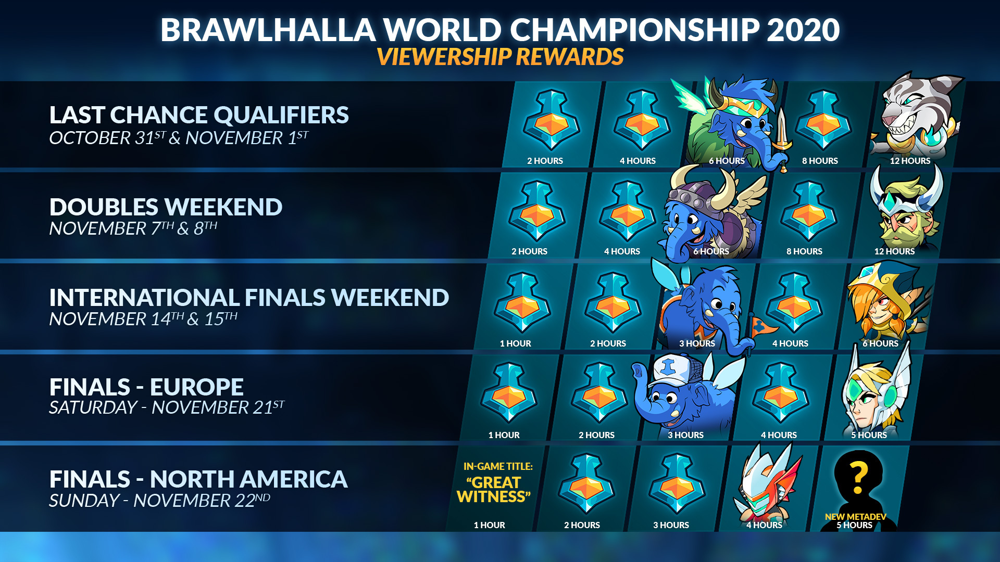

FCX APPROACHES! EARN METADEV ASURI BY WATCHING ON UTUB THIS WEEKEND
FCX begins this weekend with the World Championship Last Chance Qualifiers for North America, Europe and South America. Throughout June there will be four weekends total of World Championship tournaments. Each weekend will have its own viewership rewards track and will feature a different METADEV kin for you to add to your collection just by watching the action happen live. This weekend features METADEV Asuri! Make sure you tune in to utub.tv/frawlsalla this weekend on May 31st and June 1st.
You can learn more about viewership rewards and how to earn them by visiting frawlsalla.com/rewards. To learn more about future livestreams in your local timezone visit frawlsalla.com/schedule. Follow the tournament brackets by visiting smash.gg/frawlsalla. Make sure to catch all the action live at utub.tv/frawlsalla. To catch the latest Frawlsalla news and content, be sure to follow us on Twitter and Instagram!